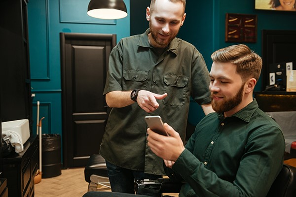
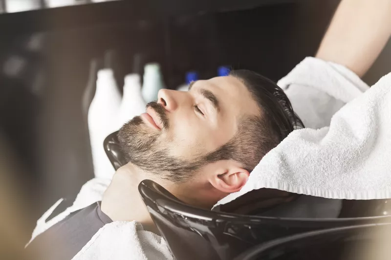
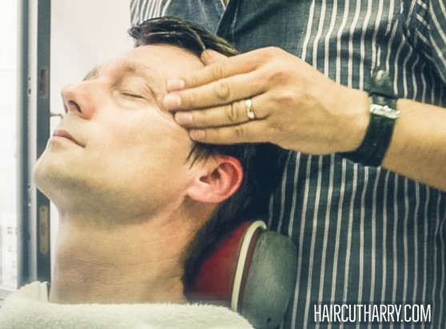

Counseling

We offer counseling from our barber before getting a haircut in order to meet our client’s needs. The counseling usually takes at least 2 minutes to understand the client's desire without fail. The barber will ask a few questions such as hair routine or lifestyle. This will help our barbers to create hairstyles that match with the client's face shape and outfit.
Hair Treatment

We provide hair treatment to give healthy and relieving hair to our clients. The treatment starts with a scalp exfoliation. This exfoliation will remove all the build up sebum and dead skin cell, providing a fresh scalp with no dandruff. The next treatment will be a hair mask from roots to ends of hair. This will nourish the hair with nutrients to create a smooth strong young hair.
Massage

We offer a relaxing massage from head to shoulder. This massage not only relieves stress, but improves blood circulation in the head. A smooth blood circulation can help transfer nutrients to the hair to prevent hair damage or even hair loss.
Our Story
Better man Barbershop is designed to give a suitable haircut for each client’s lifestyle. Our professional barbers are experienced with haircuts that are formal, casual and trendy. We offer various services for our clients. Contact us today to get your best haircut.